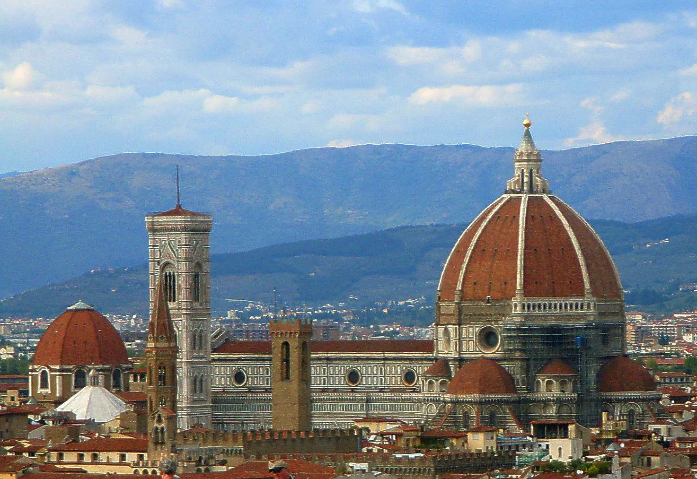
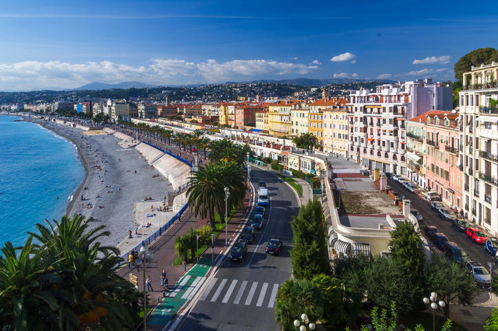

Barcelona, Spain

Barcelona is located on the northeastern coast of Spain and is the capital of Catalonia. Barcelona is home to 1.6 million people and contains multiple different historical landmarks and interesting architecture.
Barcelona is famous for its notable architects including Antoni Gaudí and Lluís Domènech i Montaner. These architects built La Sagrada Familia, Park Guell, and Palau de la Música Catalana which are among the most famous constructions in Barcelona. Both architects are famous for their Modernisme style buildings notable for their distinct colors and organic shapes.
Photo Gallery


Nanjing Fuzi-Qinhuai

Nanjing is a popular city full of Chinese history and old traditional southern kinds of agriculture. As a northern people from China, Nanjing was the first city that I traveled to the region south of the Yangtze River. Confucius Temple - Qinhuai River is the most famous place to show the beauty of Nanjing.
Confucius temple has many traditional temple agricultures inside and many small shops about traditional Nanjing specialties and popular restaurants. There are also many colorful traditional lanterns which made the night of qinhuai more gorgeous. People can also take the “Hua Fang” ( a special kind of ship) to travel around the river and the whole scenery.
Photo Gallery


Florence
Geographical Location: Europe
Florence is located north of Rome and is the capital of Italy’s Tuscany region. One of its most iconic landmarks is the Duomo, a cathedral with a terracotta-tiled dome engineered by Brunelleschi. It is also home to the Uffizi gallery, which hosts Michelangelo’s famous “David” sculpture.
Florence is the capital city of the region of Tuscany in Central Italy. It is also the most populated city in Tuscany, with 360,930 inhabitants in 2023, and 984,991 in its metropolitan area. Florence was a centre of medieval European trade and finance and one of the wealthiest cities of that era It is considered by many academics to have been the birthplace of the Renaissance, becoming a major artistic, cultural, commercial, political, economic and financial center.
Photo Gallery


San Francisco, California

Geographical Location: North America
Photo Gallery

Alcatraz island

Lombard Street

The Painted Ladies

Hill in San Francisco

The Palace of Fine Arts in San Francisco
Yellowstone


Geographical Location: North America
Yellowstone is the first national park in the United States. It covers over 2.2 million acres, and provides an opportunity to see wildlife and explore geothermal areas. In fact, Yellowstone contains about half the world's active geysers.
These unique opportunities also bring out a lot of bad decisions among the tourists. Every year visitors injure themselves or the wildlife by getting close to the animals. You can see examples of people making bad decisions by visiting Yellowstone National Park: Invasion of the Idiots, Tourons of Yellowstone, or Cowboy State Daily.
Photo Gallery


Nice, France
Geographical Location: Europe
Nestled on the French Riviera, Nice exudes a unique blend of Mediterranean culture and French allure. French is the predominant language spoken, reflecting its status as a quintessential French city.
The local culture is a mix of traditional French elements and coastal influences, with highlights including the bustling Cours Saleya market and the picturesque Old Town.
Photo Gallery